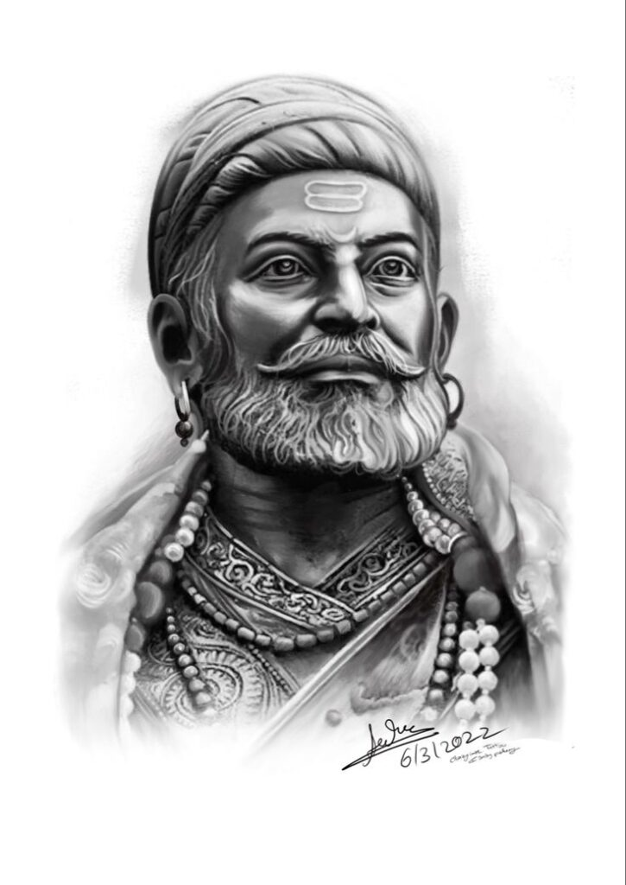

MAHARASHTRA
THE GOLDEN HISTORY OF THE GRATE ERA

Maharashtra has produced many brave war heroes who have significantly contributed to India's military history. One of the most revered is Chhatrapati Shivaji Maharaj, the legendary Maratha king known for his guerrilla warfare tactics and establishment of the Maratha Empire. Another notable hero is Tanaji Malusare, a trusted commander of Shivaji Maharaj, famous for his valor during the Battle of Sinhagad. In more recent history, Field Marshal Sam Manekshaw, who was born in Maharashtra, played a crucial role in the 1971 Indo-Pak war, leading India to victory and earning immense respect. Additionally, Major Rama Raghoba Rane, awarded the Param Vir Chakra for his bravery in the 1947 Indo-Pak war, is celebrated as a hero from Maharashtra. These figures symbolize the spirit of courage and dedication that Maharashtra has contributed to India’s defense legacy.